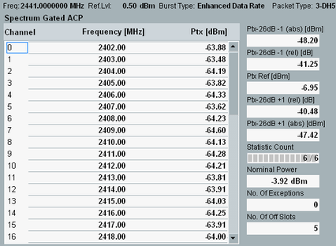
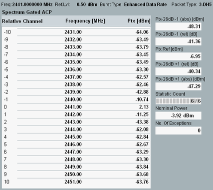
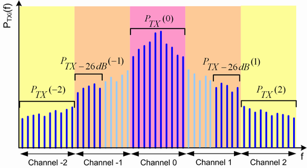

Spectrum Gated ACP Results (EDR)
The "Spectrum Gated ACP" table view shows all adjacent channel power results for EDR packets. The measurement is similar to the ACP measurement for BR packets (see "Spectrum ACP Results (BR)"), the differences are described below.

Spectrum gated ACP 79 channels results (EDR)

Spectrum gated ACP +/-10 channels results (EDR)
According to the test specification for Bluetooth wireless technology (test purpose TP/TRM/CA/BV-13-C), the ACP measurement for EDR packets is gated to cover only the DPSK portion of the packet.
The view contains the following results:
- "(Relative) Channel": Bluetooth regulatory or relative channel number.
With "ACP +/-10 Channels" mode, the channel number corresponds to the frequency spacing in MHz relative to the center channel. Channel no. 0 is the channel defined by the selected RF frequency.
With "ACP 79 Channels", the channel number corresponds to the channels within the Bluetooth regulatory range (channels 0 to 78, corresponding to RF frequencies 2402 MHz, 2403 MHz ... 2479 MHz).
See "ACP Measurement Mode". - "Frequency" in MHz: Center frequency of the (relative) channels.
- "Ptx" in dBm: Gated ACP results for all channels. The results correspond to the integrated powers that the Bluetooth device transmits in the Bluetooth channels. According to the test specification for Bluetooth wireless technology, the ACP is the sum of the maximum powers PTXi at 10 distinct, equidistant frequencies fi distributed across the channel width:
PTX(f) = ∑(PTXi), i = 1 ... 10
See also Figure "ACP calculation for EDR packets". - "No. of Exceptions": Number of ACP values with a relative channel number ≥3 and the power between the "Gated ACP > PTX" limit and the "Gated ACP > Exceptions PTX" limit.
See also "Spectrum Requirements". - "PTXref" in dBm: Reference power is obtained within the center channel as
PTXref(f) = max(PTXi), i = 1 ... 10 - "PTX - 26 dB(±1)": The absolute PTX - 26 dB(±1) measurements are calculated as the average of the five PTXi values in the ±1 relative channels, respectively, that are furthest from the center channel. See Figure "ACP calculation for EDR packets").
PTX - 26 dB(±1) = 1/5 ∑(PTXi), i = 1 ... 5
The relative PTX - 26 dB(±1) measurements are relative to the reference power value, PTXref.

ACP calculation for EDR packets
- "Nominal Power": Average burst power during the carrier-on state, measured in the "Enhanced Data Rate Filter Bandwidth".
For query of the results via remote control, see "Spectrum Measurement Results (EDR)".